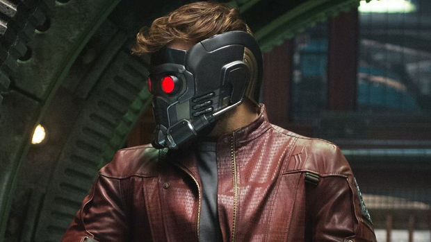

STAR-WHO?
Star-Lord (Peter Quill) is a fictional superhero appearing in American comic books published by Marvel Comics. Created by Steve Englehart and Steve Gan, the character first appeared in Marvel Preview #4 (Jan. 1976). The son of a human named Meredith Quill and the Spartoi J'son, Quill assumes the mantle of Star-Lord, an interplanetary policeman. The character played a role in the crossover comic book storylines "Annihilation" (2006) and "Annihilation: Conquest" (2007), and became the leader of the space-based superhero team Guardians of the Galaxy in the 2008 relaunch of the comic of the same name. He has been featured in a variety of associated Marvel merchandise, including animated television series, toys, and trading cards. Chris Pratt portrays the character in the 2014 live-action film Guardians of the Galaxy, and will reprise the role in the upcoming films Guardians of the Galaxy Vol. 2 and Avengers: Infinity War.


Chris Pratt portrays Peter Quill / Star-Lord in the Marvel Studios film Guardians of the Galaxy. Peter Quill is a young boy who, unable to accept his mother's death due to cancer, leaves the hospital in tears, and is subsequently abducted by an extraterrestrial star-ship. Throughout the movie, Peter is shown regularly listening to a cassette tape given to him by his mother (serving as his only connection with Earth), containing various hit songs released between 1967 and 1979. The film had a major effect on Quill's appearances in other media as his design in the comics, video games, and cartoons was changed to reflect Pratt's look in the movie.
And here is a trailer from "Guardians of the Galaxy" (2014)